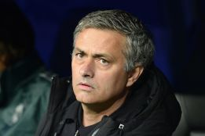

EFE 1 de mayo de 2013 10:24h
La prensa británica dio hoy por segura la vuelta de José Mourinho, entrenador al Real Madrid, al Chelsea al final de temporada después de que el portugués declarara anoche en el Bernabéu que quiere estar "donde se le quiera". El entrenador luso, de 50 años, habló al final del encuentro de semifinales de ''Champions'' en el que los blancos cayeron eliminados ante el Borussia Dortmund por 2-0, un resultado que no fue suficiente para compensar la ida, 4-0.
"José Mourinho se declara listo para retomar su historia de amor con el Chelsea", titula el diario The Times, que destaca que las palabras del técnico son la "mayor indicación hasta la fecha de que quiere -y espera- volver a Stamford Bridge"

El diario sugiere que el poco afecto que Mourinho encuentra en Madrid le hará romper su contrato con el club y marcharse a la Premier y asegura, al mismo tiempo, que su agente, Jorge Mendes, ha cerrado varias reuniones para esta misma semana con el París Saint Germain para discutir el futuro del entrenador.
The Guardian también menciona al club francés, "con el que ha habido conversaciones", aunque deja más claro que "la base de un acuerdo" con el Chelsea está ya "cimentada" para una posible vuelta del luso a final de temporada.
Para este diario, la situación del entrenador de los blancos es "insostenible" tras sus "enfrentamientos" con varios jugadores y destaca la advertencia del entorno del entrenador al presidente del Madrid, Florentino Pérez, de que si Mourinho continúa una temporada más, algunos titulares "tendrían que marcharse".
"Mourinho se ha sentido víctima de una campaña mediática, a menudo virulenta, en los últimos meses. No puede evitar preguntarse qué se esconde detrás de esa actitud en un club que mantiene con los medios una posición a menudo estratégica desde las altas esferas", indica The Guardian.
Para el sensacionalista The Sun, los comentarios vertidos anoche por el portugués "ponen a más de un club de la Premier en alerta", y señala que, además de los "blues", el Manchester City podría ser otro destino "posible" para el entrenador.
El llamado "Special One" ocupó el banquillo del Chelsea entre junio de 2004 y septiembre de 2007, y lo abandonó por diferencias con el actual dueño del club, el ruso Roman Abramovich. Pese a todo, aún se mantiene como el técnico que más títulos consiguió con los "blues": dos Premier y tres trofeos en competiciones inglesas, un dato que aún recuerdan los jugadores del equipo londinense.